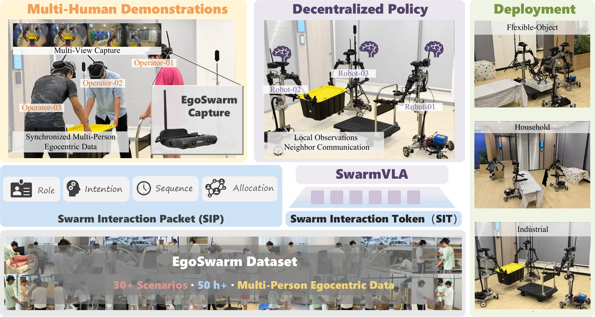
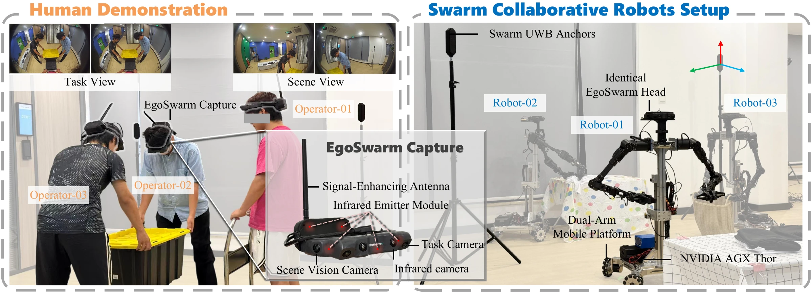
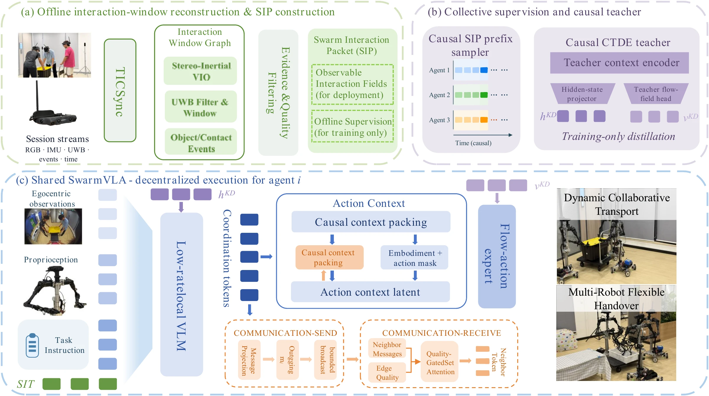
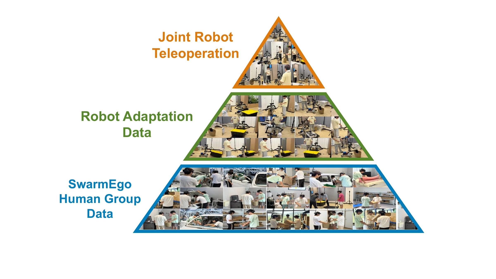
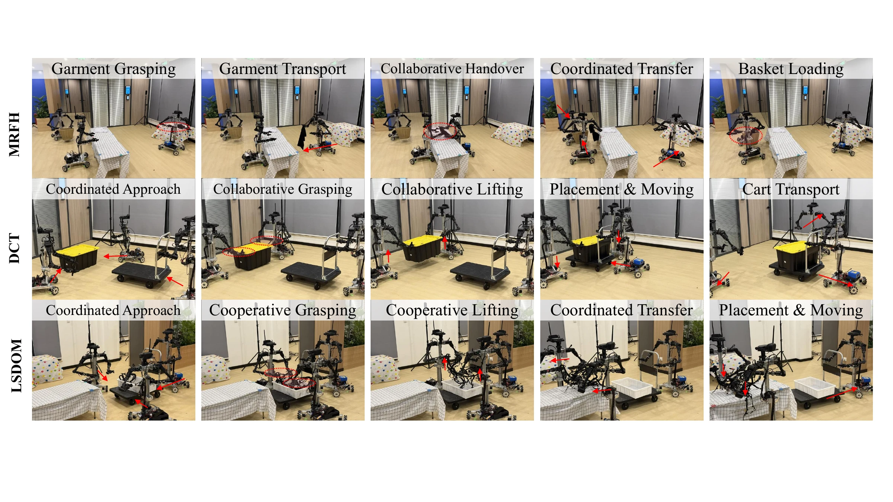

Flexible Handover
Three robots coordinate laundry handovers and basket loading.
80.0% successHUMAN COLLABORATION → ROBOT SWARM INTELLIGENCE
1State Key Laboratory of Intelligent Manufacturing Equipment and Technology,
Huazhong University of Science and Technology, Wuhan, China.
2DexSwarmAI, Wuhan, China.

Advancing from individual embodied intelligence to swarm embodied intelligence is a key step toward scalable, general-purpose embodied intelligence. Complex tasks often require multiple agents to divide responsibilities, coordinate handovers, and manipulate shared objects collaboratively. However, existing robot learning methods rely primarily on individual demonstrations, which provide limited supervision for modeling dependencies among agent actions, while collecting multi-robot demonstrations at scale remains difficult. Human egocentric demonstrations offer a scalable alternative, yet distributed observations from multiple participants cannot directly supervise decentralized policies. We introduce EgoSwarm, the first robot learning framework for learning decentralized multi-robot collaboration from human swarm demonstrations. EgoSwarm collects more than 50 hours of collaborative experience using a robot-free multi-person egocentric system. We introduce the Swarm Interaction Packet (SIP) and Swarm Interaction Token (SIT) to recover cross-agent interaction relations from distributed observations and transform this experience into local supervision consistent with deployment-time information constraints. We further propose SwarmVLA, which transfers knowledge of swarm behavior to decentralized policies conditioned on local observations, local history, and limited neighbor messages. SwarmVLA achieves a mean success rate of 72.2% across three categories of multi-robot collaborative tasks.
01 / COLLECT
Capture collaboration naturally. Transfer it through a shared sensing interface.

Synchronized egocentric recordings capture partners, shared objects, handovers, and role changes without robots at collection time.
Shared cameras, inertial sensing, and UWB preserve interaction information across human data collection and robot execution.
02 / LEARN
Turn distributed human experience into a shared, decentralized policy.

Swarm Interaction Packets align multimodal recordings and recover cross-agent relations with validity and quality annotations.
Swarm Interaction Tokens encode only interaction information available at decision time, respecting deployment constraints.
A shared policy combines local observations and history with quality-gated neighbor messages to generate robot actions.
03 / SCALE
Human swarm experience supplies diverse interactions. Robot adaptation data aligns embodiments. Joint robot teleoperation adds task-specific action supervision.
More than 50 hours across 30 scenario categories include natural waiting, interrupted handovers, role adjustments, and failure recovery.

04 / DEPLOY
Coordinated handovers, shared transport, and deformable-object manipulation.
Demo preview · Task-specific videos will be added in a future update.

Three robots coordinate laundry handovers and basket loading.
80.0% successTwo robots load a box onto a cart; a third takes over transport.
73.3% successMultiple robots coordinate through a shared flexible wire harness.
63.3% success05 / EVALUATE
72.2% mean success, a 22.2-point gain over Dec-VLA-Comm.
| Method | MRFH | DCT | LSDOM | Mean |
|---|---|---|---|---|
| Local-Rule | 20.0 | 26.7 | 10.0 | 18.9 |
| Independent VLA | 43.3 | 46.7 | 36.7 | 42.2 |
| Dec-VLA-Comm | 63.3 | 56.7 | 30.0 | 50.0 |
| Centralized Joint VLA* | 80.0 | 50.0 | 46.7 | 58.9 |
| EgoSwarm (ours) | 80.0 | 73.3 | 63.3 | 72.2 |
* Global-observation reference. Evaluation primarily uses three robots.
66.7%
Mean success under 30% packet loss and 100 ms additional delay.
Project citation; publication details will be updated when available.
@misc{liu2026egoswarm,
title={EgoSwarm: Learning Decentralized Robot Swarm Intelligence
from Human Swarm Demonstrations},
author={Ziqiang Liu and Xitong Chen and Min Li and Zhuoping Yin},
year={2026},
url={https://xitong-c.github.io/EgoSwarm_Page/}
}